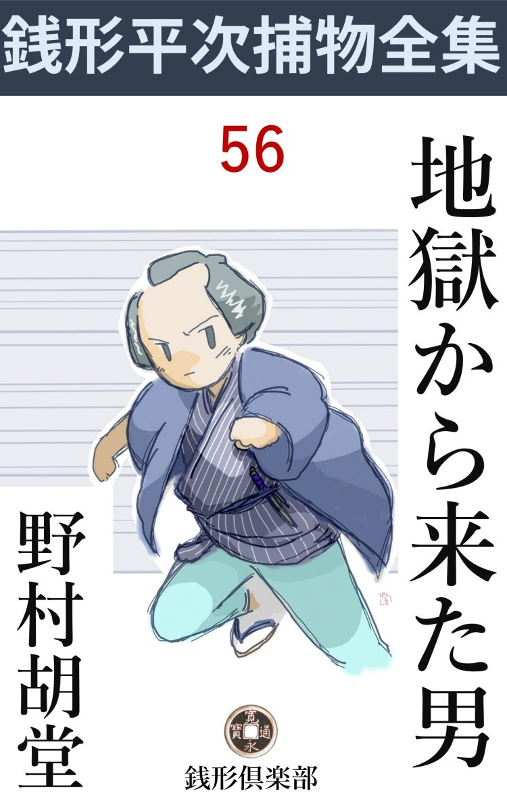
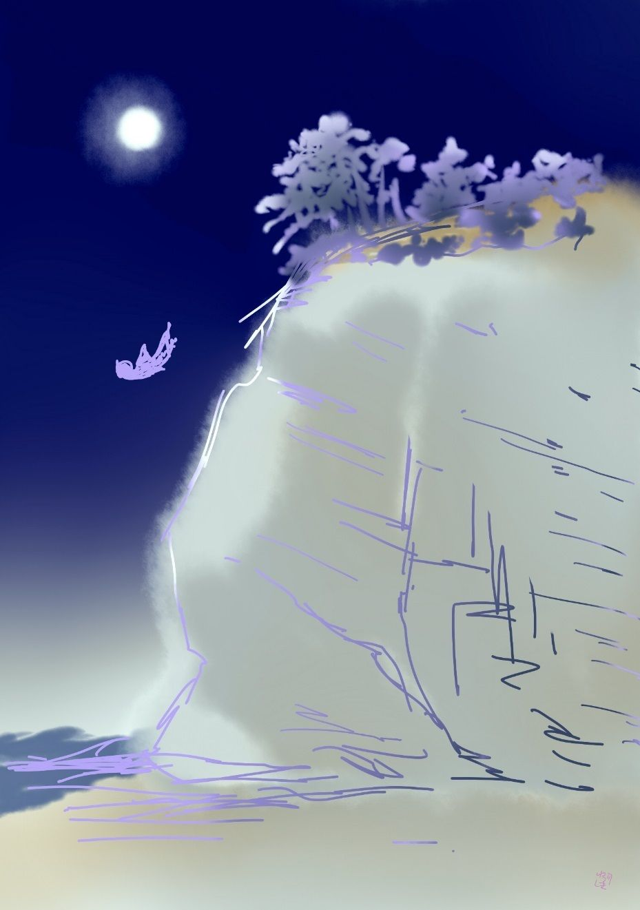

| 地獄から来た男: 銭形平次捕物全集第56話 (銭形倶楽部) | |
| 野村胡堂 | |
| ZENIGATA CLUB (2018) | |

一
「親分、変な野郎が来ましたぜ」
ガラッ八の八五郎は、モモンガアみたいな顔をして見せました。秋の日の昼下がり、平次は若い癖に御用の隙の閑寂な半日を楽しんでいる折柄でした。
「変な野郎てえ物の言いようはあるかい。お客様に違いあるまい」
「そう言えばその通りですが、全く変ですぜ、親分」
「手前 よりも変か」
「へッ」
ガラッ八は見事に敗北しました。
「何んて方なんだ。取次ぎなら取次ぎらしく、口上を聞いて来い」
「それが言わないから変じゃありませんか。名前は申上げられませんが、私のために一生の大事、どうぞ親分さんの知恵を貸して下さい------とこうなんで」
「男だろうな」
平次は妙な事を訊きました。
「大丈夫『猫の子の敵』じゃありません。へッへッ」
ガラッ八が思い出し笑いをしたのも無理のないことでした。二三日前町内の女隠居が『寵愛 の猫の子が殺されたから、下手人を捜して敵を討って下さい』と気違いのようになって飛込んだのを知っていたのです。
八五郎の案内につれて、狭い家の中に通されたのは、町人風の若い男が二人。
「------」
先に立った一人の顔を見ただけで、平次は危うく声を立てるところでした。ガラッ八の八五郎が、変な野郎と言ったのも道理、顔というのは形ばかり、顎 は歪み、鼻は曲り、額から月 代 かけて凄まじい縦傷がある上、無 慙 、左の片眼までも潰れているのです。
後ろから跟 いて来たのは同じ年輩------と言っても、無傷なだけに、こっちの方は少し老 けているのかもわかりません。三十五六の世馴れた男。頬から耳へかけて、小さいが真赤な痣 のあるのが唯一の特色です。
「親分さん、とんだお邪魔をいたします」
「御所 名前を仰しゃらない方には、お目に掛らない------と申すほどの見識のあるあっし じゃ御座いませんが------」
平次はまだ釈然としません。
「親分、お腹立ちはごもっともですが、名前を申上げられないわけがございます。------何を隠しましょう、私は、地獄から参ったもので御座います------が」
挙げたのは傷だらけな凄まじい顔。
「えッ」
平次も思わずゾッとしました。ガラッ八などはもう、膝小僧を包んで、敷居際まで逃げ出しております。
「こう申すと突飛に聴えますが、決して嘘や掛引きで申すのではございません。私は一年前に人手に掛って殺され、------いや、身内の者も世間様も、私が死んだと思い込んでおりますが、実は思いも寄らぬ人に助けられて生き還 り、自分を殺した奴に思い知らせたさに、変り果てた顔 容 を幸い、幽霊のように、江戸へ舞い戻った人間でございます」
傷の男は膝の手を滑らせました。どこともなく睨む片眼の不気味さ。本当に、地獄の底から、その怨 を果すだけに生き還って来た、幽鬼の姿と言っても平次は疑 わなかったでしょう。
「お前さんは？」
平次は顧みて伴 の男に訊きました。
「私はこの方と無二の仲で、その場に居合せなかった、たった一人の人間でございます。生き還ったこの方が、第一番に私を頼って来られたのも無理はございません」
中年男は静かに言うのでした。
「誰が私を殺したか解りません------私はそれを知りたいばかりに、江戸で半歳苦労いたしました」
傷の男の態度や話振りは、真剣さが溢れて鬼 気 迫る思いでした。
「始めから順序を立ててお話して下さい。お前さんは一体誰で、どこで、どうして殺されかけなすったか」
あまりの奇怪さに、平次も思わず膝を進めました。
二
「何を隠しましょう。私は横山町の徳力屋 千之助でございます」
「えッ、あの、去年の秋、江の島で死んだと言われた------」
平次は一ぺんに仰天しました。江の島詣 の一行が、暴風雨のために棧 橋 が落ちて島にとじ籠められ、そのうちの一人、徳力屋千之助が、雨の止んだ深夜の海の凄まじい様子を見物すると言って宿を脱 出 し、数百尺の大断崖から落ちて、わき返る怒濤の中に押し流され、それっきり死骸も上がらなかったという事件は、当時神田日本橋かけての噂になったことを、平次はまざまざと記 憶 していたのです。

「その千之助が、寿命が尽きなかったものか、地獄の釜の底から這い出したように危うい命を取止めて参りました」
「それにしては、歳が違うようだが？」
平次に残る疑いはそれでした。千之助が死んだのは、まだ祝言前の若盛りで、二十五六のように聞いておりますが、この傷男はどう積っても、三十より下に受取れません。
「これだけ念入りに痛め付けられると、歳などは滅茶滅茶になります。------変なことを申すようで恐れ入りますが、以前はこれでも、町内で何とか言われた私でございますが------」
それは本当でした。横山町の若旦那番付で、三役からは下がらなかった千之助、今見る姿はあまりにもそれと変っております。
「それは気の毒------」
平次は思わず引入れられました。
「江の島の崖の上から突き落されたとき、途中の木にも岩にも打っつかり、身体中傷だらけになって沸 り返るような嵐の海の中へ落ち込みました。私も崖から落されたのは存じておりますが、海へ落ちた覚えはございません。途中で気を喪 って、水へ入ったとき正体もなかったために、反って溺れ死ななかったので御座いましょう」
「それから」
「気の付いたのは、三日も後でございました。月に一度の大島通いの御用船が、三崎の沖で拾い上げて、まだ呼吸があるようだから可哀想に捨てもなるまいと、大島へ持って行って、漁師に世話を頼んで江戸へ帰ったそうで御座います」
千之助の話は奇っ怪でしたが、決して拵え事とは思われません。
御用船に救われて、大島の漁師の介抱を受け、三日目に正気づきましたが、恐ろしい負傷で身動きもならず、その手当がざっと三月。その間に、月に一度の江戸通いの便船はありましたが、いちど鏡を覗いて、自分の変り果てた顔を見た千之助は、本名を名乗ることも、しばらくは江戸へ帰ることも断念してしまったのでした。
光る源氏のような横山町名物の若旦那が、なんという浅ましい姿になり果てたことでしょう。この変った姿で帰ったら、この月のうちには祝言をしようということになっていた、許嫁 のお新はどんなに驚き歎くことでしょう。
歎くだけならともかく、怖 がって寄り付かないようになるのを、何より千之助は怖れたのでした。
達者になって江戸へ帰って、自分の眼でお新の顔を見て、その貞烈を見抜いた上でなければ、うっかり『千之助が生きている』とは名乗っては出られない------、そう悲しくも思い定めて、四月、五月、半歳と、親切な島の人達の世話になりながら、身体も心も恢復するのを待ちました。
漁師 や村人に礼を言って、再び御用船の厄介になり、江戸へ帰ったのは半歳前。
「私はもういちど、隅田川へでも飛込もうと思いました。------あれほど恋い慕って、毎日毎日、大島の浜辺の砂に、その名を書き暮して来たお新は、------私が江の島で死んだと聞いてから三月目、まだ死骸も揚がらないのに、見きりをつけて、小伝馬町の丸屋長次郎のところへ嫁入してしまったそうじゃございませんか」
「------」
千之助の片眼が大きくうるんで、膝へポロリと涙のこぼれるのを、平次は見兼ねる様子で顔を反けました。
「祝言をしたわけでもなく、まだ許嫁の間ですから、それも決して無理とは思いません。仮令 、私が死んだ翌る日、他 所 へ縁付いても不思議はないわけですが、私にして見れば、同じ破談にするにしても、せめて半歳待って貰って、この口から断りを言わして貰いたかったので御座います------まア、それも今となっては愚痴でございましょう。女は綺麗に諦めます、が------」
「------」
諦められそうもない様子ですが、平次は静かに点頭 きました。
「私の家はもう妹のお辰に甥 の吉五郎を婿に取って継ぎ、私が死んでも何不自由なくやっております。------今更、千之助が生きているぞ------と名乗って出たところで、この顔では急に本当にしてくれそうもございません。気違い扱いにして追っ払われるのが精々、もっとも、大島通いの御用船やら、あちらの漁師村人に訊けば、私が千之助の変り果てた脱け殻 だということも解りましょうが、そんな事をする前に、私は、自分の敵が討ちたかったのでございます」
「------」
「江の島で崖から私を突き落したのはいっしょに泊っていた、従 兄 弟 の吉五郎と丸屋の長次郎と、番頭の要助と、この三人のうちの一人に違いございません。吉五郎は私の身代を継ぎ、長次郎はお新を女房にし、要助はなんか都合の好いことをしたかも知れず、三人三様に、疑えば、疑えるのでございます。あの晩は鼻をつままれても解らない程の闇で、後ろから人が跟 けて来ても、波の音が高いので解る筈もありません。------あとで、この稲葉屋佐七さんに聞くと、私が海の様子を見に出かけてから三人が三人共、私を捜すんだと言って出たそうですから、疑いは三人の上に一様にかかるわけでございます」
話はひどく深刻で実際的でした。黙って熱心に耳を傾ける平次の様子を見ると、千之助は委 細 構わず言葉を続けます。
「この通りの顔になって、誰も私を千之助と気の付く者のないのを幸い、三月、四月と骨を折りましたが、素 人 の悲しさ、手掛りの端っこも掴めません------それどころか、お新と長次郎の睦 じさや、吉五郎お辰の仕合せな様子、要助の洒啞 洒啞 した顔などを見ると、凡夫の浅ましさで、所持金を使い果して、乞食のように成り下がった我が身がつくづく情けなく、とうとう我慢がなり兼ねて、無二の友達の一人、ここにいる稲葉屋佐七さんのところに、転げ込みました」
「いや全く驚きましたよ。私はあまり胆の大きい方じゃ御座いませんでしょう。千之助さんと知らないから、裏へ廻って、二人っきりになってから、『実は私は千之助』と打開けられた時は、全く腰が抜けてしまいました」
稲葉屋佐七は、その時の恰好を我ながら極り悪く思い出した様子で、自分の首筋をボリボリと掻いております。
「稲葉屋さんとも相談の上、ともかくも、親分さんのところへ参りました。------どうぞ、私を崖から突落した奴を捜し出して、敵を討たして下さい。親分さん、お願い------」
千之助は手を合せました。恋を失い、家と財 を失い、自分自身をさえ失った男が、まず何を措いても、こんな目に逢わせた、敵に思い知らせてやろうという、思い断つことの出来ない深 怨 の恐ろしさを見て、平次も思わず身を顫わせました。
三
「お話を聴けばいかにもお気の毒。次第によっては、ずいぶん敵を討っても上げましょうが、前もってこれだけの事を約束しては貰えまいか」
平次の心には、この不幸な男に対する憐愍 が、油の如く浸 む様子でした。
「私の望みを叶えて下されば、どんな事でも聴きます。親分さん」
「第一番に、お前さんを突き落した本人でない者は、少し位の手落ちがあったにしても怨まないということ------」
「それは申すまでもございません」
「それから、突き落した当人、------お前さんの敵の名が解っても、勝手に成敗をしないということ------」
「------」
これは千之助には我慢の出来ないことかもわかりません。
「お前さんは殺されたと言っても、運よく生き還った。この上敵を討つ積りで、うっかり人などを害 めると、こんどはお上の厄介になる------悪者が捕まっても、そのお処刑 はお上 に任せることにしてはどうだろう」
平次の調子は噛んで含めるようです。
「いかにも、親分さんにお任せしましょう。その代り一日も早く、私をこんな目に逢わせた悪者の面 を見せて下さい。私はそれで我慢しましょう。お処刑はお上に任せて------」
満面の傷が歪 んで、千之助の苦笑は、悲しくも凄まじいものでした。
事件の面白さに引入られたものか、銭形平次はしばらく、考え込んでおりましたが、いつもの神速主義で、その場ですぐ重要な手掛りを集めにかかりました。
「江の島へいっしょに行ったのは、お前さんと、長次郎と吉五郎と要助の四人だけだね」
これが第一の問です。
「その通りで御座います。片瀬へ着いたのは大嵐の真っ最中、忘れもしない二百十日の厄 日 の翌る日、陸から見ると江の島が泡の中へ湧き上がるような恐ろしい景色でした。大急ぎで棧橋を渡って宿 房 へ飛込むと、棧橋が落ちたという騒ぎ、一二日は島に籠らなきゃなるまいと言われて、安心したような、がっかりしたような変な心持だったことを覚えております」
千之助の答は詳しくて鮮明でした。
「稲葉屋さんは、その旅へは入らなかったのでしょうね」
「いえ、いっしょに参りました。が、鎌倉で手間取って皆さんから一と足遅れ、片瀬へ着く途端に棧橋が流れて渡れないと聞かされました。仕方がないから江の島を眼の前に見ながら、顔 馴 染 の片瀬の小磯屋＝女将がお世辞もので、なかなか乙な旅籠屋でございますが＝そこで二た晩暮し、棧橋の下を通れるようになってから、いの一番に島へ渡って、千之助さんが、崖から落ちて行方不明になったという大変な話を聴き、番頭の要助さんといっしょに、早駕籠ですぐ江戸へ取って返したようなわけで御座います」
稲葉屋は静かに語り終って、癖になっているらしく、隠すともなく左の頬の痣 へ掌を当てるのです。
「怪しいのは江の島に泊った三人------それぞれお前さんが死ねば儲かりそうだが、外にそんなのはないだろうか」
「まだ少しはございましょうが、身代や許嫁 に釣合う口は思い当りません」
「それでは、あべこべに、お前さんが生きていると儲かるのは誰だろう？」
平次は変なことを訊きました。
「どうせ憎まれ者で、私が助かって儲かる者などはありません。もっとも、稲葉屋さんは別ですが------」
「稲葉屋さんはお前さんに貸でもあったので？」
と平次。
「とんでもない」
稲葉屋佐七はすっかり恐縮しました。徳力は大身上、小店の稲葉屋などとは同じ金物屋でも大変な違いだったのです。
「稲葉屋さんにはずいぶん世話になりました。私が元の徳力屋に戻ってあの身上を自分の手に還した上は、少しばかりの古い貸金に棒を引いた上、今入っている家作も差上げ、もう少し資本も廻して上げたいと思っております」
千之助は稲葉屋の極り悪がるのを構わずに、こう言ってのけます。
「それは好い心掛だ。稲葉屋さんも骨折り甲斐はあるだろう」
平次は打ち解けた調子でした。この不幸な男を、元の徳力屋の主人の位置に返し、人一人闇の崖 から突き落して、口を拭っている悪者を押えることは、平次にとっても、なかなかに意義のある仕事だったに相違ありません。
四
「八、聴いたか」
「へエ------」
帰って行く二人の姿、ショボショボと路地の外に消えるのを見ながら、平次はこう言うのでした。
「あれは徳力屋の主人の成れの果とは気の毒だ。何んとかしてやりてえが、------一年前の闇の中で、後ろから突き落した手を調べるのはむずかしい」
「------」
「第一に証拠というものは一つも残っちゃいねえ。突き落された本人さえ相手の見定めが付かなかった位だから、現場の見知り人は一人もねえ」
「成程」
ガラッ八の長い顎は動きます。
「こんな変った事件 も珍しいから、俺も御用聞冥利 と、徳力屋の主人が気の毒さに引受けたが、今度という今度は、今までのようには裁ききれない、------思いきって変ったことをして見よう。いっしょに来るか。八」
「どこまでも参りますよ。親分」
ガラッ八はもう忠実な猟犬が、角笛の音を聞かされたときのように勇み立っております。
「今日は御用聞じゃねえ、人相見だよ。証拠のねえところから下手人を挙げるんだ」
「へエ------」
二人はまず横山町の徳力屋へ------。
「御免よ、神田の平次だが、主人にちょいと逢いてえ」
日頃の平次に似気なく権柄ずくです。
「どうぞこちらへ------」
通されたのは、離室 のようになった奥の六畳、横山町きっての金物問屋で、店構えから住居の造作、細々した調度まで、その頃の江戸の大町人らしい贅 を尽しております。
「親分さん。私は主人の吉五郎でございますが、どんな御用で------」
恐る恐るといって宜いほど、臆病そうな顔を出したのは、三十前後の典型的な町家の主人でした。評判の良い銭形平次ですが、御用聞に訪ねられるのは、さすがに心配だったのでしょう。
「少しお訊きしたいことがあって来たが、------先代の千之助さんが行方不明になってからもう一年になるでしょうね」
平次の調子は少し穏やかになります。
「へエ------、一周忌は十日ばかり前に済ませましたが------」
「ところで、お前さんは、前々から今の御新造------先代には妹さんのお辰さんといっしょになる約束でしたかい」
「いえ、とんでもない、そんな事などは夢にも考えません。お辰とは従 兄 妹 同士で、知らない仲ではございませんが、いっしょになったのは、先代に不意の事があって、一と月も経ってから始まった話でございます。------その時も婿八人で、稲葉屋さんのように、自分の店を仕舞ってもここへ養子に入りたいと言ったのもあるそうで御座いますよ」
「先代が亡くなると、この身上はお前さんへ行く仕組みになっていたような事はなかったでしょうか。いやこれは世間の噂だが」
平次は鋭いさぐりを入れました。
「と、とんでもない事で、親分さん。私は徳力屋へ乗込んだのは、先代が死んでから親類一同寄って決めたことで、これは誰に聞いてもわかります。徳力屋の親類や知合いには、婿になりそうなのが六人は御座います。私などは最初から話の種にもならなかったのですが、先代と仲が良かったので、先代の霊が力添えをしてくれたのでしょう。別段進んでどうということもいたしませんが、分家から入って徳力屋の跡取りに直されましたようなわけでございます」
それは恐らく掛引きのないところでしょう。少し気の弱そうな吉五郎は、六人に一人の籤 を引くために、人まで殺そうとはどうも思えません。その上吉五郎の言葉に少しの誇張もないことは、ここへ来るまでに調べ上げた、平次の準備知識とピタリと符 合 するのでした。
「それでよく判りました。が、実は御主人、あっしは大変なことを知ったのですよ」
平次は声を落しました。
「へエ？」
「江の島で崖から落ちて行方不明になった先代の千之助さん------世間では風に吹かれるかどうかして足を踏み外したと思い込んでいるようだが、あれは、人に突き落されたのだと判ったのですよ」
「そんな事はございません。------先代をそれほど憎んでいる人もなく、------あの晩いっしょに泊った三人の中には、そんな悪い事をする者はおりません」
吉五郎は少し躍気となりました。がその顔には、何の恐怖もあろうとは思われません。
「実は、御主人、先代の幽霊が出たのですよ」
「へエ------」
何んという暢気 な顔、吉五郎の口辺にはこの名御用聞を嘲 るような微笑さえ浮びます。
「先代の幽霊が血だらけになって私の枕頭に現われ、『私は人に突き落されて死にました。あんまり口惜しくて浮ばれないから、敵を討ってくれるように』と、涙ながらに言うんだがどうしたものでしょう」
平次の空々しさ。
「自分を突き落した敵が判らない------と幽霊が言うんで？」
「その通りですよ」
「おかしな幽霊じゃありませんか。あの世とやらへ行ったらそれ位の事は判らない筈もなく、怨みを言う相手が判らないから、御上の御用を聞く親分衆のところへ出るというのも可怪しいじゃありませんか。余っ程どうかした幽霊で」
吉五郎の弱そうな顔に生気が動いて、その眼は反抗と叡智に輝きます。
「お前さんも可 怪 しいと思いましたか。御主人」
と平次。
「へエ------」
「ところで、御新造に逢わして下さい。それから、番頭の要助さんに。------私が話をする前は、先代の事を言ってはなりませんよ」
「へエ」
吉五郎は疑惑と不満で一パイな心持で去りました。顔見合せた平次と八五郎。
「親分、怪談は驚いたネ」
「シーッ」
部屋の入口にはお辰が静かに立っておりました。
五
お辰は美しいが平凡な女で、兄の死については、積極的に何の考えもなく、成行きのままに吉五郎を婿に迎え、成行きのままにつつましく、生活を営 んでいるといった肌合いの人間でした。
続いて呼出された番頭の要助。これはかなり注目されました。大番頭の半兵衛は年のせいでこの一二年は名ばかりの位に備わり、二番番頭の要助は、まだ三十四五の若盛りながら、先々代からの知遇を得て、近ごろはもう一手に店を切り廻しているのでした。
典型的な忠義者、------といった感じの、几帳面 に、忍従で少し片意地で、そのくせ愛嬌のある------こんなのがとんだ喰わせ者かも知れないと思ったほど『番頭型 』の人間です。
「先代の幽霊を見たが------」
平次はこの話を二度くり返しましたが、要助は、
「へエへエ、ごもっともさまで、怖いことでございますな。へエへエ」
一々合 槌 を打ちながら、御無理ごもっともで聴いておりますが、腹の中では、すっかり平次を馬鹿にしている様子です。
平次は他の奉公人にも逢い、先代生前の頃と、今の商売の様子まで突っ込んで調べましたが、物事は円滑に進んでいるというだけで、店にも奥にも、何の不都合も不安もありません。
「八、どうも幽霊の言う事の方が違っていたかも知れないな」
「少し間抜けな幽霊じゃありませんか。親分」
「馬鹿、------間抜けに見えても、手前よりは悧巧だよ------俺は丸屋へ廻って見るから、手前 は稲葉屋へ行って千之助に逢って、徳力屋の家のことで、千之助一人だけしか知らない事があったら聞いて来てくれ。それから、千之助と要助と二人だけしか知らない事も一つ二つ聞き出す方が宜いだろう。二た刻もしたら俺の家で待ってくれ」
「へエ------」
平次はガラッ八に別れると、その足をすぐ小伝馬町の方へ延しました。万一千之助を突き落したのが一人でなかったとき、仲間で連 絡 を取って、口を合せられては叶いません。急いで三人に逢おうとしたのはそのためです。
「御免よ、相変らず精が出るね」
「あ、神田の親分さん」
丸屋の長次郎は小さい雑穀屋の若主人で、豊かという程ではありませんが、界隈に名も顔も売れた好い男でした。丈夫で、元気で、イナセで、若旦那模様の千之助------災難に逢う前の男っ振りも評判でしたが、江戸の若い娘たちが、丸屋の長次郎の方により強い魅力 を感じたのも無理はありません。
「驚いちゃいけないよ、大変なことがあるんだから」
「へエ」
「徳力屋の千之助が、生きて江戸へ還って来たが知ってるだろうね」
「えッ」
長次郎は店先に立竦 んだまま眼を見張りました。平次が予想した以上の衝動を与えたらしく、頬が痙 攣 して、唇は僅かに動きますが、舌が干 く様子で、しばらくは言葉も出て来ません。
「で、それだけなら宜いが、『生きているのに、身代や許嫁を横取りされてはたまらない。徳力屋の吉五郎を追い出して、丸屋からはお新を取り戻す』って言ってるが、どうだ」
平次は何を考えたか、とんでもない突っ込んだ事を言います。
「ジョ、冗談でしょう。向うは許嫁 だけで、祝言したわけでも何でもねえが、私はもう女房にしているんですぜ。取戻される道理もなく、渡してやる筋合でもありません。馬、馬鹿馬鹿しい」
長次郎はとんでもない見幕でした。唇を噛んで拳 を握ると、顔へはサッと忿怒の血が上ります。
「だが、千之助が、どうしても取り戻すと言ったら？」
「渡しゃしませんよ。とんでもない」
「千之助が死んで、とんだ有卦 に入ったのは、吉五郎とお前さんだ」
「それはその通りでしょう。------でも、死んだ当座は本当に気の毒だと思いましたよ」
「生きて還ったと聞いたら、憎くなったろう」
「へエ------」
「その千之助は、江の島の崖から落ちたのは怪我や過 ちじゃなくて、闇の中で人に突き落されたんだって言ってるが、どうだ」
「そんな事を私は知りゃしません」
「だから、死んだあとでうまい事をした奴が、私を突き落したに違いない------と千之助は言うんだが」
「------」
「その上、自分を突き落した奴を、薄々知っている。俺から奪った物を返すなら命位は助けてやっても宜い------とも言うぜ」
「勝手にさせたら宜いでしょう。本当に突き落した奴があるなら、遠慮なんか要るものか、一日も早く縛 らせて、何とかしてやりゃ宜いじゃありませんか」
丸屋長次郎は強気の一本槍です。
堅実そうな店構え、若くて威勢のいい主人。そういったものが、丸屋の空気をすっかり明るくして、この中から暗い罪の蔭など捜し出せそうもありません。
六
「私は新でございます。千之助さんが生きていなすったというのは、そりゃ本当でございましょうか」
聞き兼ねた様子で、店先へ顔を出したのは、藍 色 の袷を着た、紫 陽 花 のような感じのするお新でした。
「ちょうど宜い。御新造、------千之助が生き還ったこともお聞きなら、何にも言うに及ばねえが、この先どうする積りで？」
平次がこんなに人の悪い問を弄 ぶのは、珍しいことです。
「どうもいたしません。私はここの嫁ですもの」
「------」
平次は黙って眼を見張りました。何と言う簡単な、が含 蓄 の多い言葉でしょう。
「今更申上げても仕様がありませんが、徳力屋へゆけと言ったのは親達。ここへ嫁いで来たのは私の望みで御座います」
柱に掛けた手が滑ると、蔓 を切られた大輪の朝顔のようにゆらりと落ちて、店の板敷に崩折れます。千之助があの傷だらけの顔で、真っすぐに帰って来るのを遠慮したのも無理はありません。これは美しい人達の多い神田日本橋かけても、比ぶべきものがあるまいと思うほどのきりょう です。
「親分、死んだはずの千之助が一年目で出て来るというのは変じゃ御座いませんか。顔なんか昔の通りでしょうね」
と長次郎。
「いや、江の島で突き落された時やられたそうで、見る影もない顔だ。身内の者が見ても、おいそれとは判るまいよ」
「それじゃ偽首 じゃありませんか、よくある術 で」
「それも考えているが、間違いはない積りだ。いずれお前さん達とも顔を合せるだろう。気の毒な人だ。慰めてやるが宜い」
「そりゃもう、子供の時からの仲好しですもの、及ぶだけ力にもなり、立つ身は立ててやりますが、女房を返せだけは断りますよ。あとで間違いのないように、今のうちに私の口から言っておきましょう------どこにいるんで？」
長次郎はどこまでも一本調子です。
「いや、それは困る。今顔を出させちゃぶちこわしだ。その話なら、私から言っておこう」
平次は尻尾を巻きました。完全な敗北です。
七
「親分、首尾は」
ガラッ八は先に帰って待っておりました。
「さんざんの体だ。どう考えても吉五郎と長次郎は下手人じゃねえ。二人共申分のない良い男だ」
「すると番頭？」
「それも主人殺しをする程の男ではなさそうだ」
「じゃやはり吉五郎か、長次郎じゃありませんか」
「吉五郎には殺すわけがなかった。お辰と徳力屋の身代は、後でひょっこり吉五郎に飛込んで来た代 物 だ------長次郎は正直一徹の男さ。万一身に覚えがあるなら、あれだけ脅 かされた上、千之助が生き還ったと聞けば、お新を返すと言うだろう」
「すると人相の方ではうまく行かなかったわけで、------」
名御用聞にその名物助手は、途方に暮れた顔を合せました。
「三人とも潔白 だとすると、あとはたった二つしか考えようがない」
「二つと言うと？」
「一つは、千之助は人に突き落されたと思っただけで、実は風に吹飛ばされ、怪我をして気を喪 ってそんな夢を見たのではないかということだ」
「------」
「もう一つは、あれは真実の千之助ではなくて、とんだ天一坊ではあるまいかということだ」
「へエ------」
「千之助の死骸の揚がらないのを付け目に、稲葉屋佐七が細工をして、あんな顔の潰れた男を探し出し、徳力屋を乗取って山分けにするか、それが及ばなきゃ、脅かしてうんと取り込む術 もある」
平次の頭は緻密に動きます。
「それにしちゃ変ですぜ親分。あの傷男は徳力屋のことを何もかも知っていましたよ。あっしは去年の二百十日前の帳尻から、箪 笥 の刀の銘 、三代前の戒名 まで聴いて来ましたよ」
「フム」
「それからもう一つ面白いことを聴きましたよ。徳力屋の土蔵の中の金箱の鍵は、大 海 老 錠 で持ち歩きが厄介なので、金箱の後ろに拵えた、隠し穴へ入れて置くんだそうです。それを知っているのは、主人の千之助と二番番頭の要助とたった二人だけ、大番頭も知らないんだそうで------」
「そいつは面白い。江の島へ行く時、幾ら金が入っていたか聞いたろう」
「七百八十五両あったそうです」
「有難い。それがそっくりしていれば、要助は潔白だ。大急ぎで徳力屋へ行って、去年の騒ぎの後で金箱の鍵がどこから出て来たか、中の金が幾らあったか、大番頭の半兵衛に訊いてくれ」
「へエ------」
八五郎は飛び出しましたが、半刻 の後、帰って来ての報告は、余りに平凡で明白なものだったのです。騒ぎの翌日、鍵は要助の手から大番頭の半兵衛の手に渡され、中を開けると小判小粒交ぜて七百八十五両あったということです。
八
「親分さん。判りましたか」
稲葉屋の暖簾 をくぐると、目ざとくも見つけて、傷だらけな千之助は飛んで出ました。
「面目次第もないが、今度という今度は兜 を脱ぎましたよ」
平次の勢いのなさ、雇人達の耳を恐れて通された奥の四畳半、佐七と千之助を左右にして額を叩きます。
「と、仰しゃるのは？」
「吉五郎も、長次郎も、要助も、間違いもなく潔白ですよ。この平次の首を賭 けても宜い」
「へエ、するとどんな事になります」
「下手人は思いも寄らぬ人間でしょう。江の島でいっしょに泊ったのはあの三人だけとすると、悪者はその晩島に泊っていた、見ず知らずの泥棒だったかも知れず、前から漁師の家へでも潜り込んでいた、お前さんを狙 っている者の仕業かも知れません」
「------」
「それから、片瀬の宿屋も一応は捜し、土地の人にも逢って来ましょう」
平次の考えようは真剣でした。こうなれば、是が非でもといった意気込みがほの見えるのも、職業的な強さです。
「一年前のことで、今ごろ行っても覚えているでしょうか」
と佐七。
「なアに、旅籠屋は宿帳があるし、騒ぎのあった時の事は、一年二年経っても誰でもよく覚えているものです。それに、下手人の人相に人と異ったところでもありゃ、逃がしっこはありません」
平次はそんな事を言ってしばらくの暇乞 をしました。見ると軽い旅装束、片瀬、江の島へ行くと言うのも満更の嘘とは思えません。往来まで送って出た佐七、
「親分、変なことがあるんですが------」
と四方を見廻します。
「知ってるよ稲葉屋さん。あの男は千之助でないかも知れないという疑いだろう」
平次は先を潜りました。
「どうして、そんな事を？」
「殺した者がなきゃ、あの男が偽者に決っているじゃありませんか------私は片瀬江の島へかけて、もう一度、あの時の死骸も捜 す積りですよ」
そのまま、品川の方へ急ぐ平次、佐七は二の句も継げずに見送りました。
翌る日の晩。横山町の徳力屋------一年前の自分の家のあたりを、ブラブラ見て歩いた千之助。妙に物懐かしい心持になって、夜更の町をトボトボと帰って来ると、
「野郎ッ、気を付けろ」
いきなり疾風 の如く飛んで来て、正面からドシンと突き当ったものがあります。
「あッ」
犬っころのように投り出された千之助、ようやく起上がろうとすると、後ろから喉笛へサッと投げかけた縄。
「------」
物をも言わず悶絶 する千之助を、三人の荒くれ男が、引きさらって肩に引っ担ぎました。
「飛べッ」
「合点」
宙を蹴ると見えて六本の脚。それも三間と行かないうちに釘付けされてしまったのでした。
「待て待て」
行手へ立塞がって大手を拡げたものがあるのです。
「何をッ、邪魔しやがると、踏み潰して通るぞ」
威猛高の三人。その頭を押えつけるように凜とした声が響きました。
「文公、六助、久太------又悪戯 か。いくら貰ったか知らないが、止せ止せ、そいつは人殺しの片棒だ。迂 闊 に担 ぐと命がねえぞ」
「ああ銭形の親分」
いやもう、蜘蛛 の子を散らすよう。この時平次は、路地から飛出したもう一人の男の後ろ髪を掴むと、ようやく人心地ついた千之助の前に引据えました。
「さア約束通りお前さんを殺した敵の顔を見せて上げよう」
「あッ稲葉屋ッ」
千之助はもういちど大地に尻餅をつきました。
× ×
平次を甘く見て、一度は千之助の言うがままに解決を頼みましたが、尻が割れそうになると、日ごろ眼をかけている悪者どもをけしかけ、千之助をさらって大川に沈めた上、
------あれはやはり天一坊で、尻が割れそうになって逃出しましたよ------と平次へ報告する積りだったのです。
さいしょ頑強に『知らぬ存ぜぬ』と言い張っていた佐七も、ガラッ八が片瀬から江の島を調べて三日目に帰って来ての報告に、顔見知りの片瀬の小磯屋には三年越し佐七が泊ったことがないと解った上、去年二百十日の翌日の晩、江の島の猟師の家を叩き起し、小判一枚投り出して泊めて貰った、左の頬に赤い痣 のある男があった------と聞かされて観念しました。
こうなっては一も二もありません。
佐七は千之助から借りた金が、無証文のままかなりの額になったのを、証文にしてくれと言われていたのと、千之助の妹のお辰を嫁にと申込んで断られたのを根に持ち、一と足おくれて江の島へ入って、後ろからすぐ棧 橋 の落ちたのを幸い夜の闇に隠れて、物好きな千之助の出るのを待ち、絞め殺してもと企 らみましたが、断崖の上へ行ったのを見て、後ろから突き落したと言うのです。
その後半歳経って、千之助が生き還って、フラリと訪ねた時はさすがに仰天しましたが、今度はそれを逆用して、謝礼をせしめようとしたのは、何んとしても細くありません。
徳力屋の後継ぎは相当むずかしい問題でした。が、銭形平次が中に入って、千之助が元の主人に還り、吉五郎お辰を分家さして無事に納まりました。千之助も艱難に鍛 えられて、美しいお新を諦める気になった事は言うまでもない事でしょう。
「親分、変な捕物じゃありませんか」
ガラッ八は二三日経つと絵解きが聴きたい様子です。
「変じゃないよ。千之助があんな崖から落ちて助かった------という外には、不思議は一つもないよ。敵を討ちたさに一年間我慢していたのも少し変だが、許嫁 が他所へ行ってしまえば、捨鉢になるからそうしたものかも知れないぜ」
「人相見は当りましたね」
ガラッ八は少し薄笑いします。
「人には言うな、俺の隠し芸にしておくから。ハッハッハッ」
「でも、佐七が臭いとはどうして気がつきなすったんで------」
「千之助が助かって得をする者は、佐七ばかりと言った時からだよ。そう言う癖に、古い借金は棒を引いてやると言ったじゃないか」
「へエ------」
「それから、お辰を嫁に欲しいと言って断られたと言うじゃないか。吉五郎や要助や長次郎には、怨 というものはないが佐七には怨があった。金ずくじゃ滅多に人は殺せねえが、それに怨が加わると別だよ」
「なるほどね」
「江の島でいっしょに泊った三人が潔白だと判ったとき、------もう一人近所にいる奴はないか------と俺は考えたよ。江の島にはいないが、片瀬にはいる、棧橋をうまく渡れば、その晩どんな細工でも出来たわけだ。それに佐七は余計なことを言った。『片瀬の顔馴染の小磯屋』だとか、『女将 はお世辞もの』だとか、------気がとがめるから、あんなに判 然 した事を言うんだ。身に覚えのないものなら、片瀬に泊って来た、と言っただけでたくさんじゃないか」
「------」
「俺が片瀬から江の島へ行って調べる、と言ったときの佐七の顔色といったらなかったよ」
「いよいよ人相見だね。親分」
「証拠のない時は人相でも見るよ。そして相手が罠 へ飛込んで来るのを待つより外に仕方はあるまい」
平次は元の平静な態度に還りました。閑寂 な秋の日です。
（編注）
作品中には、身体の障害や人権にかかわる、差別的な語句や表現が見られますが、本書が成立した当時の時代背景等が現代とは異なる古典的な文学作品でもあり、著者が故人でもありますので、底本のままとしました。ご理解、ご諒承のほどをお願い申し上げます。
著者---野村胡堂
挿絵---萩 柚月 © 2017
初出---「オール讀物」昭和十一年十月号 文藝春秋社
底本---「錢形平次捕物全集」第三巻 河出書房 昭和三十一年六月十五日初版
編集・発行 銭形倶楽部